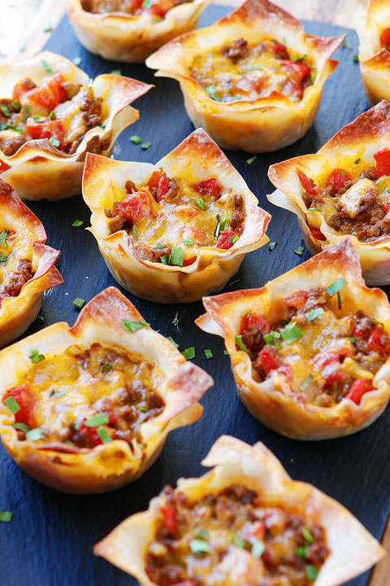

Crunchy Taco Cups

Description
Crispy and delicious taco flavor in a grab and go cup! Using wonton wraps in muffin pans this savory party or game day food will certainly be a fan favorite.
Ingredients
- Pack of wonton wraps (requires 48 wraps)
- Twp pounds hamburger
- One can diced tomatoes and green chilis (Rotel)
- Shredded Mexican cheese
- Taco seasoning
- Your favorite taco toppings!
Steps
- Preheat oven to 350 degrees.
- Brown the hamburg and spray each cup of two muffin pans with non-stick cooking spray.
- Drain the hamburg really well as as little grease as possible is desired. Add to large mixing bowl.
- Drain the tomatoes and add to bowl with desired amount of taco seasoning and stir well.
- Place a wonton wrap into each cup and place a spoonful of the meat mixture in each one.
- Add cheese to each cup and then add a second layer of wraps/meat mixture/cheese.
- Bake for around ten minutes or until edges of cups are browned and crispy.
- Remove from muffin pans and serve with sour cream, salsa, and taco sauce or any other of you favorite taco toppings.